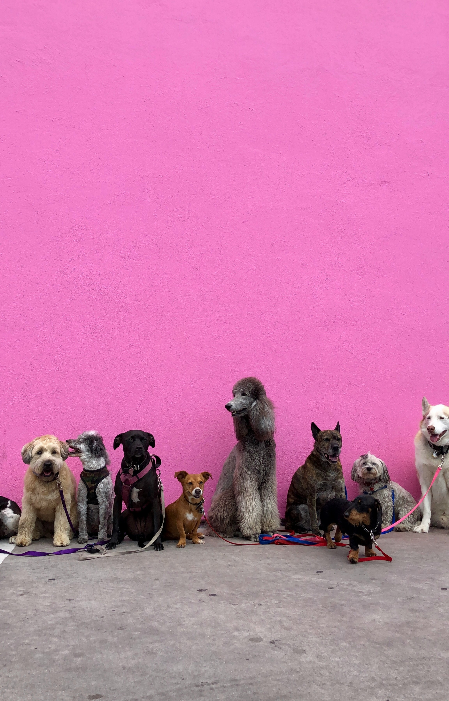
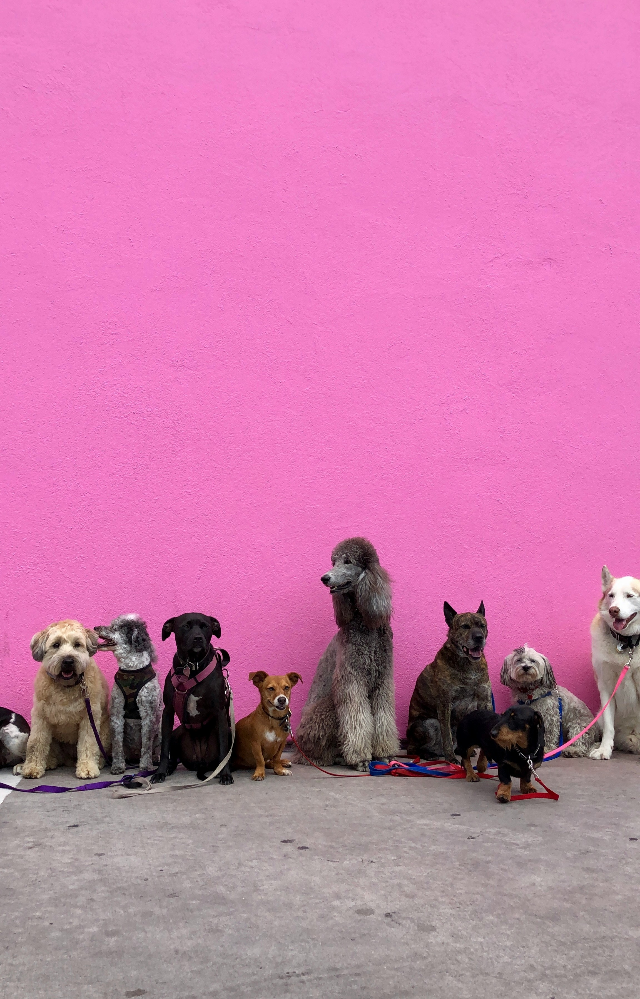

Want to Adopt or Put on a Dog for Adoption?
Every tail wag on the Huntington Beach Dog Adoption Committee conveys a message of hope. Welcome! Connecting devoted families with rescue pets in need of a forever home is our goal. Our committed staff puts in a lot of effort to make sure every dog finds the ideal home, whether you're searching for a playful puppy or a faithful friend. Adopting a dog gives a worthy canine a second chance at life in addition to providing you a best friend. Look through our available canines now and join us in changing the world, one adoption at a time!
At the Huntington Beach Dog Adoption Committee, we think all dogs should have access to love, care, and a secure home. Dogs of all kinds, ages, and histories are the focus of our rescue efforts, and we make sure they get the care, love, and training they require before finding new homes. We work to decrease the number of homeless pets and encourage responsible pet ownership with the help of our amazing volunteers and kind donors. Adopt, foster, donate, or volunteer today to support our work and help us provide these amazing dogs with the fulfilling lives they deserve!
 
